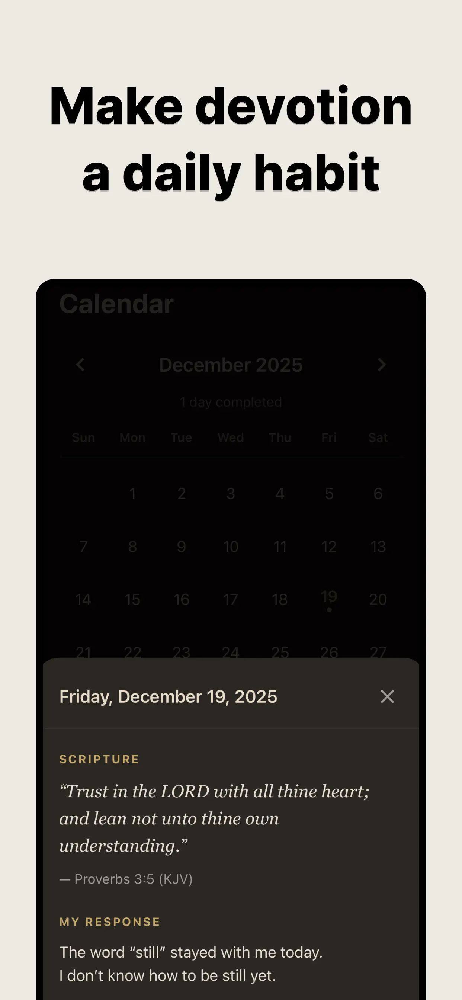

Bible Focus › Guides › Quiet Time with God
How to Have a Quiet Time with God That Survives Real Life
"Quiet time" sounds simple until you try to have one in an actual life — alarms, commutes, kids, group chats. The problem usually isn't desire. It's that quiet doesn't happen by accident anymore. It has to be built, and then it has to be defended.
The classic three: time, place, plan
1. Choose a time you can keep
Not the ideal time — the keepable time. Morning is the classic choice because the day hasn't claimed you yet, but a faithful lunch break beats an imaginary sunrise. Consistency matters more than the clock. Even five minutes counts.
2. Choose a place that signals quiet
The same chair, the same corner, the same bench. Familiar places train your heart: when I sit here, I'm here to meet God. If your only quiet place is your parked car — that's a fine chapel.
3. Have a plan waiting
The quickest way to lose a quiet time is opening the Bible with no idea where to go. A plan removes the decision. Bible Focus hands you one chosen passage each day with a gentle Read → Reflect → Respond → Pray path — you sit down and the way is already laid out. (New to the structure? Start with how to start a daily devotional.)
The forgotten fourth: protection
Here's what the classic advice misses: you can have the time, the place and the plan, and still lose your quiet time to a single buzz. The average phone user checks their device within minutes of any pause. Willpower mid-prayer is a thin wall.
Bible Focus was built around this exact problem. When you begin a devotion, the distracting apps you choose are temporarily blocked using Apple's built-in Screen Time control. The wall isn't willpower anymore — it's structure. (Full details: stop phone distractions during prayer.)
"Trust in the LORD with all thine heart; and lean not unto thine own understanding."Proverbs 3:5
Keep it sustainable
- Three minutes is a real quiet time. A Bible Focus devotion takes about 3 minutes — long enough to be meaningful, short enough that busy seasons can't cancel it.
- No streaks, no scorekeeping. Bible Focus intentionally has no streak pressure. The calendar quietly marks completed days; grace covers the gaps.
- Write small, honestly. One line about what stayed with you. Over months, your reflections become a private record of God's Word working in you.
- Return freely. You can reread today's passage or revise your reflection later — quiet time doesn't have to end at amen.

Build a quiet time that actually lasts
One verse a day · Distractions blocked · Free on iOS